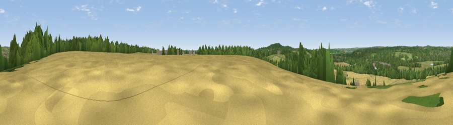

Viewpoint near Bisham
#34262 in England · top 33% of its area beats it · near BishamThe view, rendered

A 360° render of this exact spot computed from the terrain model, tree cover and land cover — summer colours, afternoon light, calibrated against photographs of famous viewpoints. Real trees, hedges and buildings will differ in detail.
The panorama
Grey silhouette: terrain skyline in each direction (720 bearings, Earth curvature and refraction included). Dashed green: skyline with trees (+15 m) and buildings (+8 m) as obstacles. Blue strip: how far the ground is visible on each bearing.
Where the view opens
Wedge length = distance to the farthest visible ground on that bearing (vegetation-aware). Rings at 10, 25 and 50 km.
What fills the view
36% grassland · 30% cropland · 27% woodland · 4% built-up · 2% water
Angular shares of the visible panorama (visual magnitude), not map area. Landscape diversity 0.56 (0–1 Shannon).
Key numbers
More beautiful places nearby
The staircase of upgrades: each row has a higher view potential than everything closer. Driving times are estimates from straight-line distance, calibrated against real road routing — check an actual route before setting out.
| Place | Direction | Drive | Score |
|---|---|---|---|
| Fultness Wood Hill | NE · 1 km | ~4 min | 57.8 |
| Viewpoint near Watlington | NW · 17 km | ~30 min | 67.1 |
| Viewpoint near Watlington | NW · 17 km | ~30 min | 70.6 |
| Viewpoint near Lewknor | NW · 18 km | ~31 min | 70.8 |
| Viewpoint near Lewknor | NW · 18 km | ~31 min | 74.4 |
| Coombe Hill Monument | N · 23 km | ~38 min | 75.5 |
| Beacon Hill | WSW · 47 km | ~67 min | 76.7 |
| Viewpoint near Buriton | SSW · 65 km | ~88 min | 80.0 |
51.54608, -0.78102 · source: screening · position refined by local search. Computed location — check access rights before visiting.